计算机系统 III ¶
体系结构 ¶
Fundamentals of computer system Week1¶
Classes of computers(by Flynn)
- SISD(single instruction single data stream):only in theory
- SIMD(multiple):commonly used
- MISD:only in theory
- MIMD:current CPU
Classes of computers(in textbook)
- desktop/personal
- server: 服务器 security
- embedded: 嵌入式 immediate response
- personal mobile
- supercomputer(peak performance + electricity -> cooling)
Performance
The performance(time) can be affected by:
- Algorithm(time complexity)
- Programming language,compiler,architecture
- Processor and memory
- I/O,OS
Measuring performance
- Single users on a PC
minimization of response time
minimization of execution time
- Large data
maximization of TP
- Response time
- Execution time(CPU time)
comprises of user CPU (execution) time and system CPU time
\(Performance = \frac{1}{Execution Time}\)
If X is n times faster than Y,then \(\frac{Performance_X}{Performance_Y} = \frac{Execution Time_Y}{Execution Time_X} = n\)
系统量化研究方法 Quantitative approach ¶
CPU Performance
\(CPU\ Execution\ Time = CPU\ Clock\ Cycles * Clock\ Period\)
\(CPU\ Execution\ Time = \frac{CPU\ Clock\ Cycles}{Clock\ Rate(freq)}\)
Performance improvement by
- reduce number of clock cycles
- increase clock rate
- trade off clock rate against cycle count
Average cycles per instruction(CPI)
\(CPI = \frac{CPU\ Clock\ Cycles}{Instruction\ Count}\)
\(CPU\ time = \frac{Instructions}{Program}*\frac{Clock\ Cycles}{Instructions}*\frac{Seconds}{Clock\ Cycles}\)
Amdahl's Law( 性能优化 ) ¶
\(Improved\ Execution\ Time = \frac{Affected\ Execution\ Time}{Amount\ of\ Improvement} + Unaffected\ Execution\ Time\)
\(T_{improved}=\frac{T_{affected}}{improvement\ factor} + T_{unaffected}\)
局部加速比 :improvement factor
\(Speedup_{overall} = \frac{Performance\ for\ entire\ task_{using\ enhancement}}{Performance\ for\ entire\ task_{without\ enhancement}}= \frac{Total\ Execution\ Time_{without\ enhancement}}{Total\ Execution\ Time_{using\ enhancement}}\)
改进比例 :\(fraction = \frac{Time\ can\ be\ improved}{Total\ Execution\ Time}\)
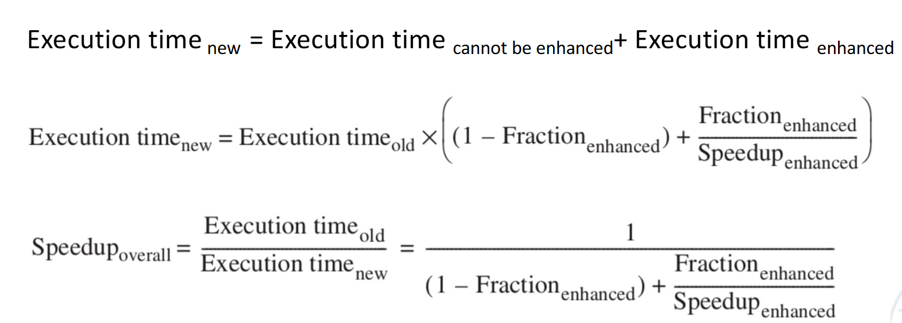
\(Speedup_{overall} < \frac{1}{1-Fraction_{enhanced}}\)Great Architecture Ideas¶
- Moore's law:number of transistors doubles every 18-24 months
- Use abstraction to simplify design
- Make the common case fast
- Improve performance via parallelism
- Improve performance via pipelining
- Improve performance via prediction
- Use a hierarchy( 分级 ) of memories
- Improve dependability( 可靠性 ) via redundancy( 备份 )
Below the program:
- parallel nature of processors
- hierarchical nature of memories
- compiler decisions
Instruction-Level Parallelism(ILP) Week2 - 3¶
Dependencies
- Data dependence(RAW-read after write)
- Name dependence:rename
GAS 1 2 3 4 5 6 7
DIV F2,F6,F4 ADD F6,F0,F12 SUB F8,F6,F14 //anti-dependence(WAR) DIV F2,F6,F4 ADD S,F0,F12 SUB F8,S,F14GAS 1 2 3 4 5 6 7
DIV F2,F6,F4 ADD F6,F0,F12 SUB F2,F6,F14 //output-dependence(WAW) DIV F2,F0,F4 ADD F6,F0,F12 SUB S,F6,F14 - Control dependence:Branch hazards
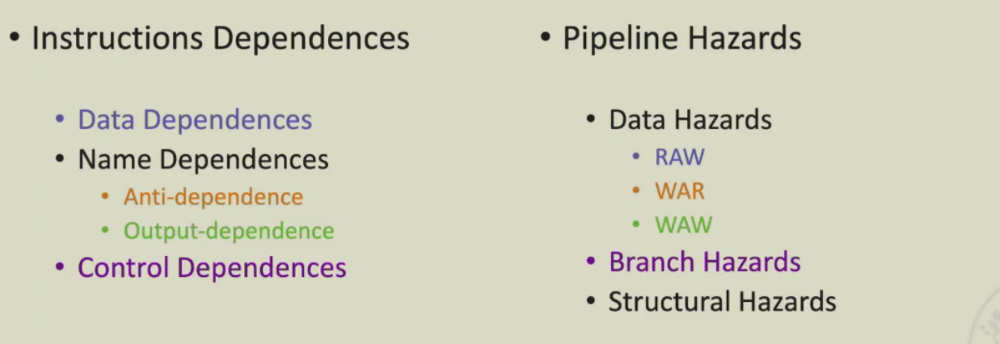
Hazard
- Structure hazard:add hardware
- Data hazard:Forwarding + stall/scheduling
- Control hazard:branch prediction
Branch prediction¶
- static: 任选
- dynamic:BTB
Delay slot:forbidden by RISC-V due to prediction
Dynamic branch prediction
1.Branch History Table(BHT):2-Bit predictor
2.Instruction/Data-read/Data-write buffer(Branch-Target Buffer(BTB) in prediction)
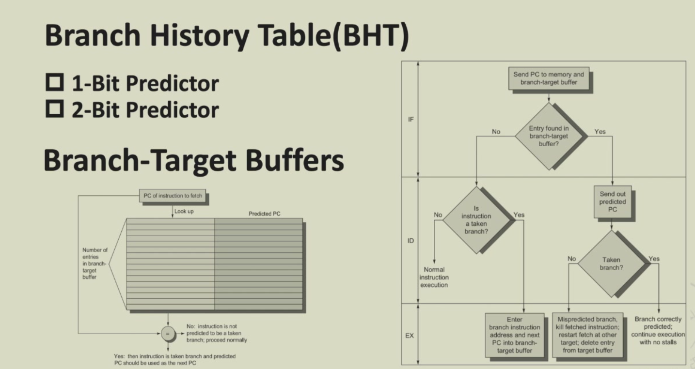
Dynamic Scheduling¶
simple pipelining has the limitation:
In-order
| GAS | |
|---|---|
1 2 3 | |
Scoreboard¶
Scoreboard algorithm is an approach to schedule the instructions.
recall:hazard detection in ID
split ID into two parts:IS(issue) & RO(read operands)
IS:check structural hazards(in-order)
RO:check data hazards(out of order)
cannot flow to IS/RO if a certain hazard exists
| GAS | |
|---|---|
1 2 3 4 5 6 7 | |
info table design
- Instruction status table
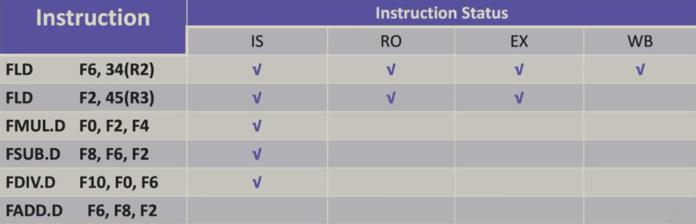
- Function component status table
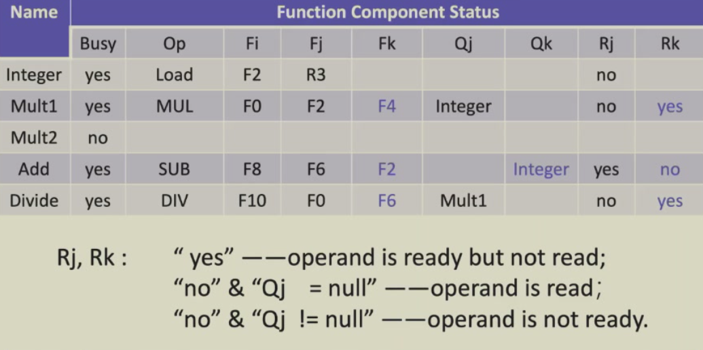
只有在某条指令执行WB后清空该指令使用的部件的一行，下一个要使用这一部件的指令才能进入IS阶段 - Register status table
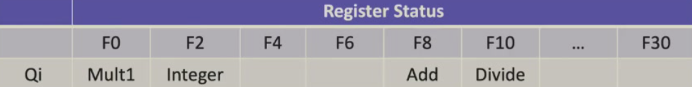
note that register status can be read from function component table,register status table is created just for convenience.
In-class practice:
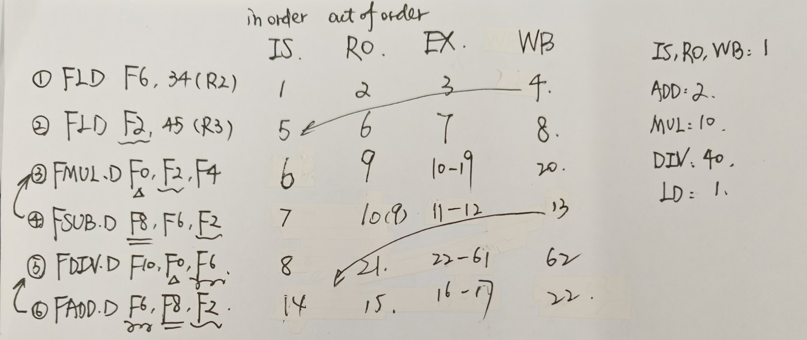
Tomasulo¶
Tomasulo's approach is to introduce register renaming in hardware to minimize WAW and WAR hazards.
| GAS | |
|---|---|
1 2 3 4 5 6 | |
Command Data Bus(CDB):将指令需要的值替换为保留站的结果(6.ADD中F8的值即为adder RS的结果,保留站的名称替代了寄存器的名称),通过广播的方式使结果分布控制
执行阶段简化为IS,EX,WB三阶段,没有解决顺序写回的问题
IS:检查保留站是否还有空位 EX:保留站中乱序执行,如果操作数未全部ready则等待,操作数已经ready的先执行
WB:CDB同时将结果写入寄存器和需要的RS
Register status Qi记录寄存器与RS的对应关系
Instruction status table,Function component status table,Register status table(Field Qi) are still needed.
Limitation:
- Structual complexity
- performance limited by Common Data Bus
- correctness not guaranteed
The limitations on ILP approaches directly led to the movement to multicore.
In-class practice:
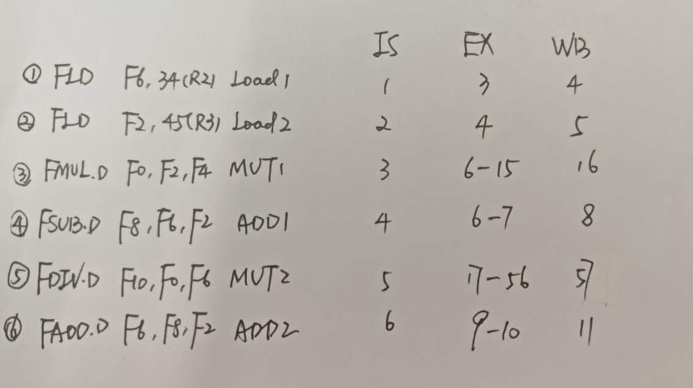
Instructions come out in order:Waiting sofa(buffer)
Hardware-Based Speculation 硬件前瞻 ¶
Reorder buffer(ROB) before writing back to registers
extend the stages of every instruction into:IS,EX,WB,Commit
Commit:In-order write back —— the key of speculation
- Function component status table:ROB No. in column dest in
- ROB table:the current stages of the relevant instructions
- Register status table:ROB row shows the registers to be written and the corresponding ROB No.
In-class practice: 前三列同 Tomasulo
Commit列:5,6,17,18,58,59
60 个周期的表格变化，每个格子会填会算
- Precise exception
- easily extend to other(e.g. integer)units
- complex hardware(CDB)
Exploiting ILP Using Multiple Issue and Static Scheduling¶
- n-issue Superscalar
- VLIW
- Super pipeline
Dynamic scheduling is more dependent on hardware,while static scheduling may not.
Multi-issue based on dynamic scheduling:
双流入流出Tomasulo:
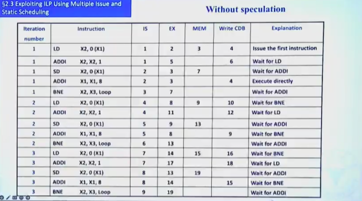
bottleneck:data-dependent branches & ALU With Speculation:
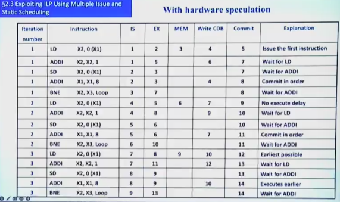
前瞻执行：不需要等待分支结果，因为不一定要提交
Branches are a critical performance limiter(especially with data-dependent ones),but speculation helps.
VLIW¶
operation slots
parallel execution in EX
| GAS | |
|---|---|
1 2 3 4 5 | |
- code length increases
- lockstep mechanism
- machine code incompability
Superpipeline¶
IF IS RF EX (DF DS TC) WB
Memory Hierarchy(Cache) Week4 - 5¶
Introduction¶
- Registers
- Cache
- Memory
-
Storage
-
Mechanical memory
- Electronic memory
SRAM:static random access memory(Cache) DRAM:dynamic ~(Main memory) DDR2(double data rate上升沿和下降沿都能传数据),DDR3,DDRSDRAM Flash ROM:read-only memory PROM,EPROM - Optical memory
Temporal/Spatial locality 时空局部性
Cache:a safe place for hiding or storing things.
hit/miss:whether the processor can or cannot find a requested data in the cache
hit rate/miss rate/hit time/miss penalty
Block run:A fixed-size collection of data containing the data we need retrieved from the memory
Spatial locality:likely need other data within the same block soon
Technology Trend¶
SRAM DRAM SDRAM(Synchronous DRAM) DDR SDRAM HBM:High Bandwidth Memory DRAM SSD HDD/TAPE
Memory Hierarchy¶
Cache Miss¶
Latency:the time to retrieve the first word of the book
Bandwidth:the time to retrieve the rest of the book
Miss causes
- Compulsory:first reference(cache is empty)
- Capacity:blocks discarded and later retrieved
- Conflict:program makes repeated references to multiple addresses from different blocks that map to the same location in the cache
desktop users:average latency
server:memory bandwidth(multiple users)
embedded:power and battery life/real-time response/small memory
Everything is a cache.
Registers -> L1-Cache -> L2-Cache -> Memory -> Disk
Cache Size = Block Size * Sets + Related info(Indexes)
Cache Design¶
Using a FSM to control a simple cache
next-state function determines the state transition
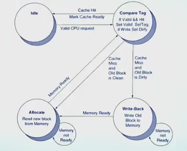
write through写直达:write back to both cache and memory
1.Where can a block be placed in the upper level?(Block placement)¶
Direct mapped¶
(Block address) modulo (Number of blocks in the cache): 循环分配
e.g.Cache number = 8(0-7)
Memory 1,9,17,25 -> Cache 1
[Problem]low space usage & high conflict probability
Fully associative¶
Block can go anywhere in cache
n-way Set associative¶
Each memory block maps to a cache group(n cache blocks in each group) and put memory block into certain cache block in casual
for most caches:n <= 4
2.How is a block found if it is in the upper level?(Block Identification)¶
Every block has an address tag that stores the main memory address of the data stored in the block
valid bit
index selects the set/block
direct map:tag + set index + offset
hit if valid_bit == 1'b1 && tag == mem_addr
Cache Size calculation¶
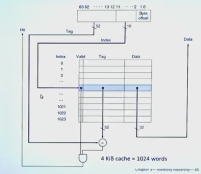
The size of the block is One word(4 bytes)
64-bit addresses
2nblocks(n bits for the index)
block size = 2mwords
tag = 64-(n+m+Byteoffset) = 64 - (10 + 0 + 2) = 52
Byteoffset = log2block size(in bytes) = 2
cache size = 2n * (block size + tag size + valid size) = 210 * (20 * 32(bits/word) + 52 + 1) = 85Kib.
E.g.How many total bits are required for a direct-mapped cache with 16KiB of data and four-word blocks,assuming a 64-bit address?
ANS:16KiB = 4096words = 212words
block size is 4 words = 22words,m=2
212/22 = 1024blocks,n=10
data = 4 * 32(bits/word) = 128 bits(16Bytes * 8)
tag = 64-(n+m+2) = 50 bits
note:64-bit address = 50-bit tag + 10-bit index + 2-bit word offset + 2-bit Byte offset 映射到缓存块
Cache Size = 2n*(block size + tag size + valid size)
= 210 * (128 + 50 + 1) = 179Kib = 22.375KiB
E.g.Consider a cache with 64 blocks and a block size of 16 bytes. To what block number does byte address 1201 map?
1201 / 16 = 75(1200-1215 in the same block)
75 modulo 64 = 11
3.Which block should be replaced on a cache/main memory miss?(Block Replacement)¶
No selection is needed for direct map
Handle cache miss:
1.send PC to memory(PC - 4)
2.main memory perform and wait
3.write the cache entry
4.restart inst execution(refetch)
In set-associative and fully-associative,N blocks to choose for replacement.
Random¶
LRU¶
Least-Recently Used(LRU):assumed more recently accessed blocks more likely to be referenced again
use extra bits to keep track of accesses
FIFO¶
First In,First Out(FIFO)
OPT(In theory)¶
Replace the one with the latest use in the future
Thrashing:Loop access sequence causes no hit for FIFO/LRU
Block Size affects the performance greatly
Stack replacement algorithm¶
Bt(n) represents the set of access sequences contained in a cache block of size n at time t.
Bt(n) is the subset of Bt(n+1).
LRU is a stack replacement algorithm.
FIFO is not a stack replacement algorithm.(Belady)
Least-Recently Used is pushed to the bottom of the stack
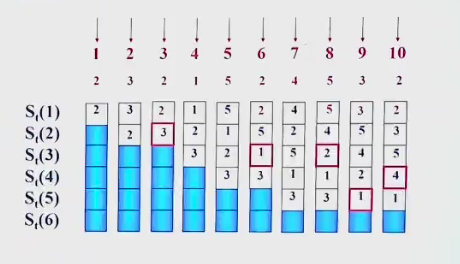
Implementation¶
Comparison pair flip-flop
e.g.three cache blocks(A,B,C)
take pair AB,AC,BC
TAB:A is accessed later than B
TAB,TAC,TBC represents the sequence of access by applying triggers and gates
huge block number:Layered comparison
4.What happens on a write?(Write Strategy)¶
When data is written into the cache,is the data also written to main memory?
Write Through
- can always discard cached data
- only a valid bit
- memory always have the latest data
Write Back
- can't discard
- valid bit and dirty bit(cache 与 memory 不一致 )
- much lower bandwidth
Write hit write buffer(write through) Write miss
- write allocate block is loaded into the cache(write back)
- write around block is only written to main memory(not stored in the cache)
Read allocate
memory -> cache
read from cache
Read through
E.g.Assume a fully-associative write-back cache(empty)
What are the number of hits and misses using no-write allocate vs. write allocate?
no-write allocate
| GAS | |
|---|---|
1 2 3 4 5 | |
| GAS | |
|---|---|
1 2 3 4 5 | |
Virtual Memory¶
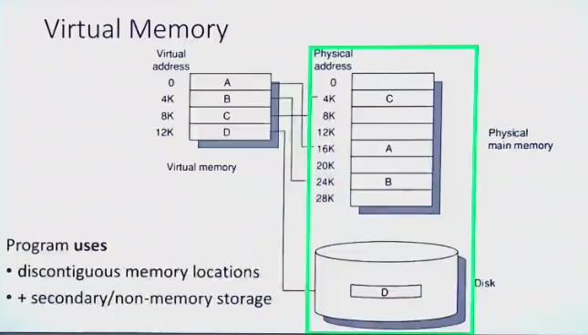
Memory System Performance¶
Memory Stall
Average Memory Access Time(AMAT)
\(AMAT = (HitTime + MissRate * MissPenalty)\)
E.g.Impact on performance
*CPU Vulnerability¶
Meltdown¶
利用 Intel CPU 乱序执行，利用内存响应时间越界访问
Spectre¶
利用 Cache 预取指令获取私密信息
OS¶
Main Memory Week7 - 10¶
Partition¶
using physical memory
multi-programming:partition
protection,fast-execution,fast context switch
Once process starts,partition cannot be moved
Solution:logical address(offset within the partition相对地址)
Simple implementation:base and limit(length) registers(privileged)
between base and base + limit:segmentation
limit check for protection
- built-in protection
- fast execution(hardware)
- fast context switch(only change base and limit)
- norelocation of program address
- partition can be suspended and moved at any time
Memory allocation strategy¶
fixed
same size causing Internal Fragmentation( 分配的用不完 )
variable
External Fragmentation( 有空 process 放不进 )
first-fit,best-fit,worst-fit
Segmentation¶
.text,.data,... have different authority,can they be put into the same partition? 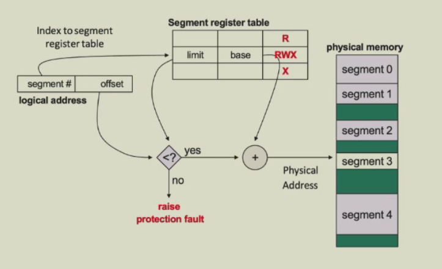
No,we map one process to n partitions(each is called a segmentation)
[Problem] Insufficient base and limit registers
[Solution] Segment table:an array where each entry has base and limit and perm(permission)
Every process has a segment table
Only a base register is needed to point to the segment table
Every entry represents a segmentation
logical address now is a pair:
limit can be changed,therefore it is a variable allocation,no internal fragmentation but external fragmentation
Segmentation is used effectively in Unix(before paging because of small amount of additional hardware)
address binding
source code(symbolic) -> compiler(relocatable) -> linker(absolute)
Memory-Management Unit(MMU):a translator from logical addr to physical addr
Paging¶
basic idea:cut the process,making it noncontiguous(avoids external segmentation)
divide physical addr into fixed-sized blocks called frames( 帧 )
divide logical(virtual) addr into blocks of same size called pages
Set up a mapping to translate logical to physical addr,this mapping is called page table(index page,value frame)(not stored in the pages)
Internal fragmentation
fixed length partition
page size:2048,program size:72766(35 pages + 1086bytes)
internal fragementation = 2048 - 1086 = 962
Nowadays,the page size is getting bigger because we allow waste in memory(memory is cheaper)
frame table:which frame is free,how many frames have been allocated,... helps OS manage physical address
logical addr =
m-n bits for page_number,n bits for page_offset
m = 32/64,n = log2(page_size)
x86:232 = 4GB
Implementation¶
Page-table base register(PTBR),Page-table length register(PTLR)
[Problem] Access page time to find frame number needs one memory access while actually read the data in memory needs another memory access
[Solution] cache the translation to avoid one memory access(TLB:Translation Look-aside Buffer)
hardware implementation:associative memory
tag TLB entries with address-space identifier(ASID)that uniquely identifies a process when context-switch
Associative memory supports parallel search
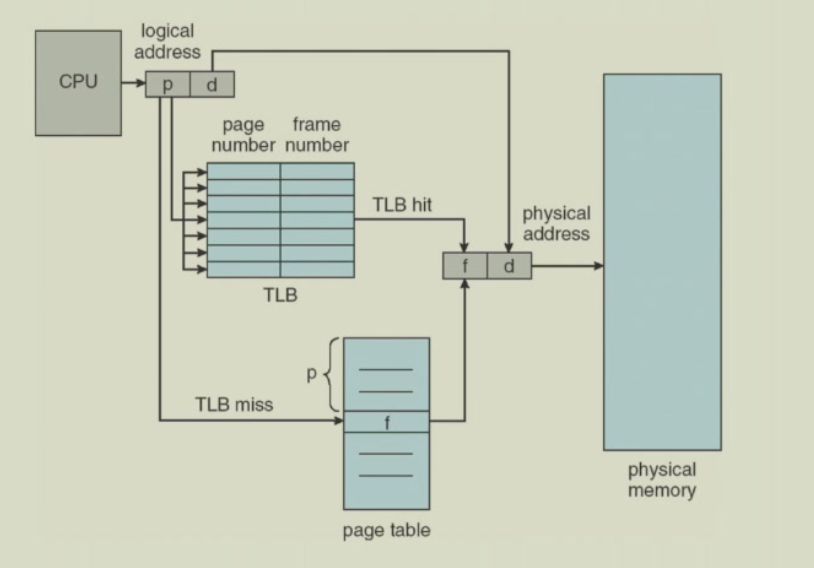
Effective Access Time EAT = hit_ratio * memory_access_time + (1 - hit_ratio) * 2 * memory_access_time
In modern design,hit_ratio is approximately 99.9%
Increase the page size helps improve the hit ratio(memory_access_size = TLB_size * page_size)
Memory Protection
present(valid) bit and permission bits in page table
Page Sharing
Run a program multiple times:.text can be shared but .data cannot be shared
Structure¶
[Question] 32-bit logical address space & 4KB page size,what is the page table size?
4G/4K = 1M entries(page table lines)
1M * 4B = 4MB(must be physically contiguous because another table needed for mapping if page table is splited)
If we have 1K processes,simply page tables occupies the whole memory
[Observation] Many indices are invalid
[Solution] break down page table into pages
Page size is 4KB,how many entries can fit in one page?
one entry is 4B,thus we have 1K entries/page
1M entries can be broken down to 1K pages,indexed by 1K entries,put into another page(4KB)
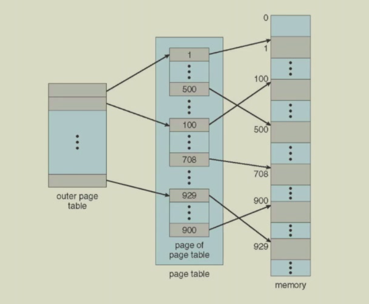
[Advantages] Pages don't need to be contiguous,and no page allocated if invalid in the first level
logical addr =
10-bits page_directory_number and 10-bits page_table_number:1K entries per table
If page size is 64KB,we have 16-bits offset,14-bits page_table_number and 2-bits page_directory_number
Page Table in Linux:page table base register CR3(arm:TTBR,RISCV:SATP)(store physical addr,otherwise another table for mapping is needed) 64-bit logical address space:16EB(4G * 4GB)
Page table entry:8B page table size:4KB
Entry number/page = 512
3-level page:12 + 9*3 = 39bits(512GB Phone)
4-level page:48bits(256TB Server)
5-level page:57bits(128PB AI)